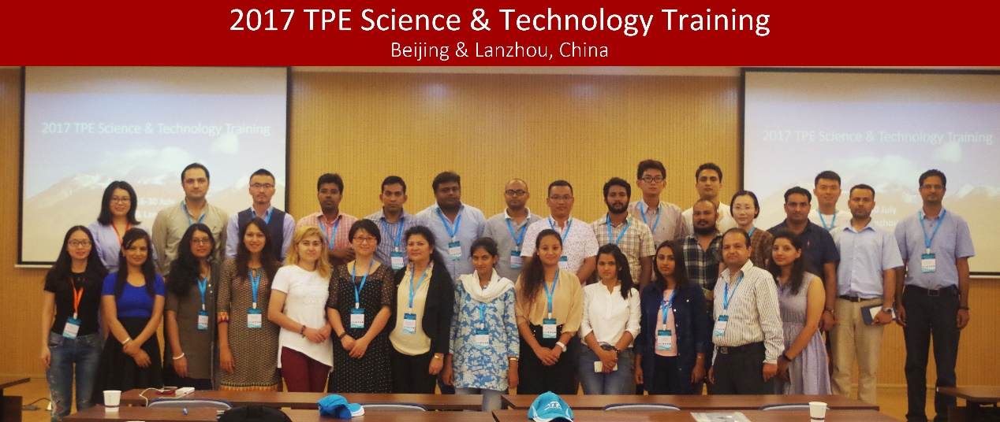
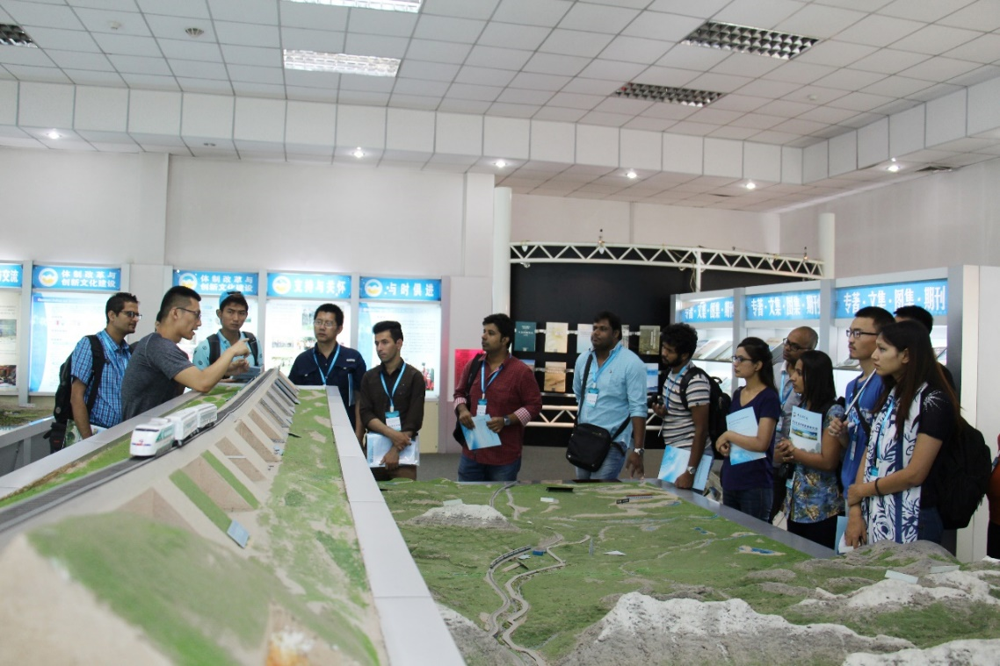
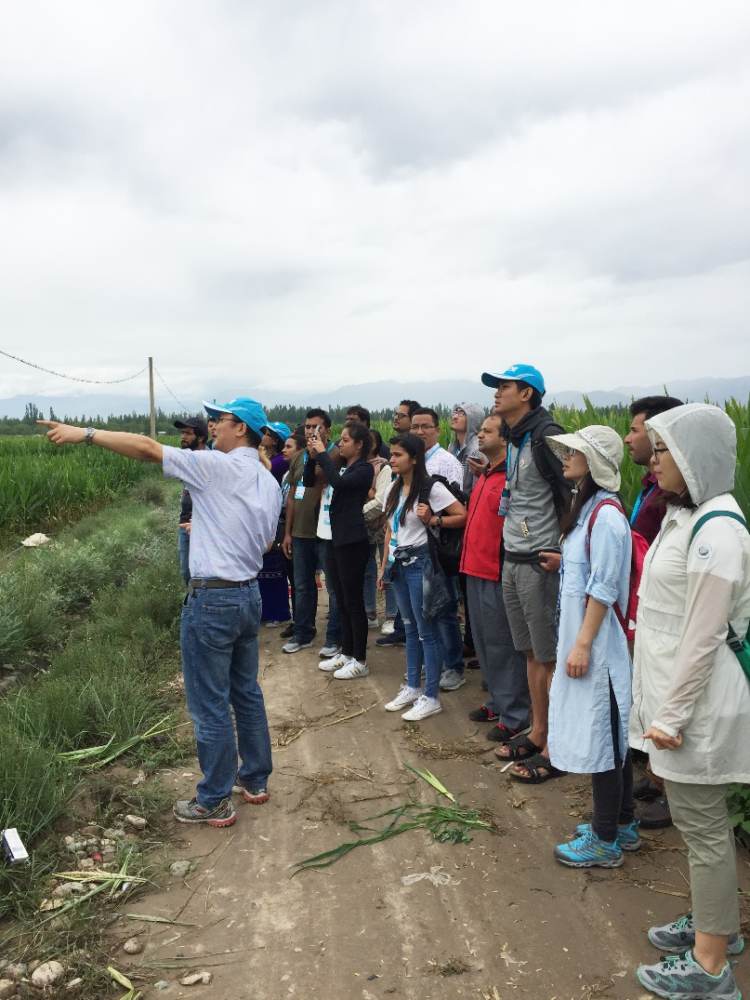
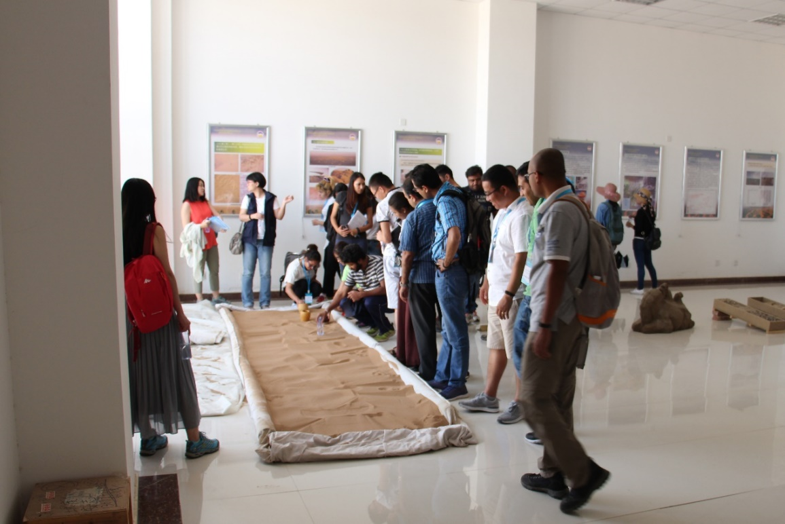

在中国科学院国际合作局的大力支持下，“第三极环境”(TPE)国际计划、中国科学院加德满都科教中心、中国青藏高原研究会联合举办了2017第三极环境青年人才培训班（2017 TPE Science & Technology Training）。参加此次培训班的学员共25名，来自中国、尼泊尔、巴基斯坦、缅甸、塔吉克斯坦、孟加拉、伊朗、斯里兰卡等10个“一带一路”相关国家。
此次培训为期15天，自7月16日开始至7月30日结束，包括11次室内课程、2次实验室实践及7天野外实践。其中7月17日至21日，培训班组织学员们在中科院青藏高原所北京部参加了集中的室内授课，受邀的国内外资深专家从冰川、大气、水文、地质、环境、生态等方面为学员们介绍了第三极地区近年来的重要科研进展。7月23日至29日，培训班组织学员们到甘肃河西走廊参加了野外实践课程，大家从兰州出发，沿“古丝绸之路”向西，途经张掖，最后到达敦煌。学员们在兰州参观了中科院西北生态环境资源研究院（筹）寒旱区科技创新馆、冰冻圈科学国家重点实验室、冻土工程国家重点实验室、中科院沙漠与沙漠化重点实验室；在张掖参观了中国科学院黑河遥感观测站及大满遥感观测试验场40m观测塔；在敦煌参观了中国科学院敦煌戈壁荒漠研究站，并实地考察了鸣沙山月牙泉防沙治沙工程。
此次培训为TPE跨境野外考察与观测以及长期的合作扩充了人才队伍，进一步推进了“第三极环境”(TPE)国际计划的实施。

学员与部分授课老师合影

参观中国科学院西北生态环境资源研究院（筹）科技创新馆

参观大满遥感观测试验场40m观测塔

参观中国科学院敦煌戈壁荒漠研究站室内鸣沙实验